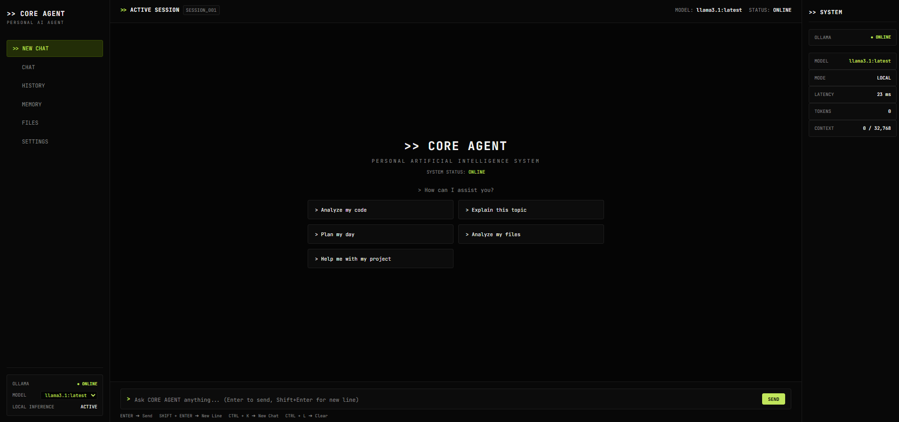

LOCAL AI
Core Agent
Tamamen yerel bilgisayarda Ollama altyapısıyla çalışan, gizlilik odaklı, terminal estetiğine sahip, modüler ve kişiselleştirilebilir kişisel yapay zeka komuta merkezi.
Teknolojiler: HTML5, CSS3, Vanilla JS, Ollama API
GitHub'da gör